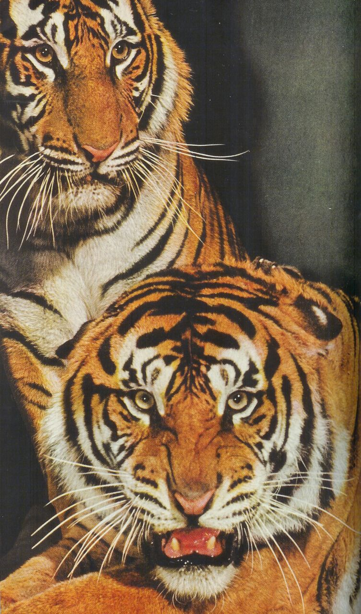
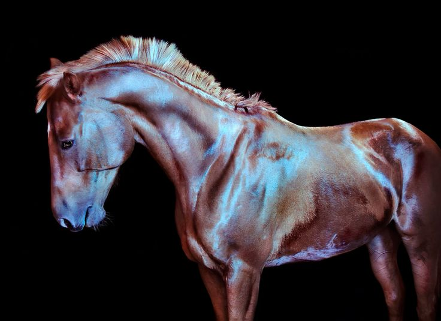
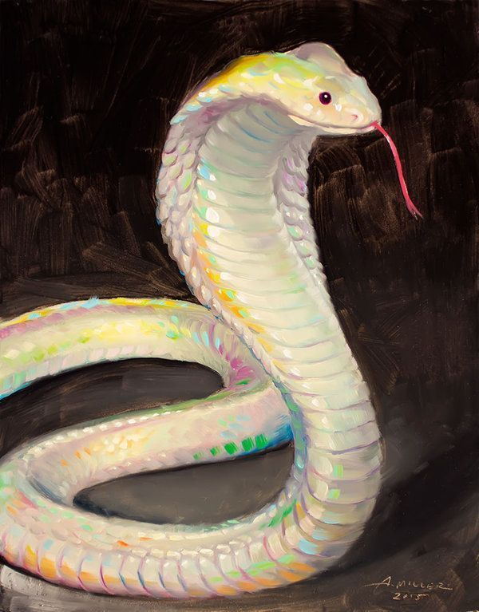

Tiger
The tiger is one of the strongest and most fearless predators in the wild. Its strength and beauty are amazing.
Horse
Horses are symbols of beauty and freedom. Their speed and grace are truly impressive.
Snake
Snakes are mysterious and fascinating creatures. Their movements are graceful and mesmerizing.
